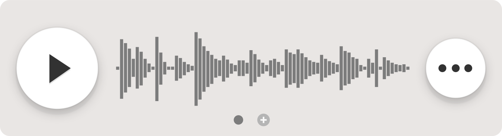
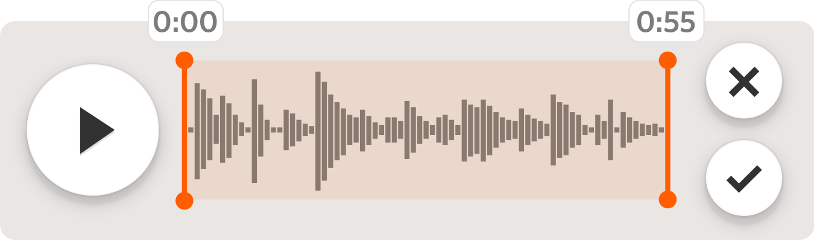

Howdy! We’re really excited to release version 1.6 of Hum. This is largely under-the-hood stuff, but I assure you we’re working on some new much-needed features.
In order start that work, we had to first get our house in order. 1.6 represents a large rewrite of Hum’s codebase. It brings us up to date for iOS 9. With true iOS 9 support, we’ve also dropped iOS 7.
We’ve improved bluetooth audio playback. We’re now supporting 3D touch. Our tuner is also bundled in Hum. New users will have it included in their purchase of Hum. Sweet!
We’ve fixed lots of little bugs in the meantime.
Our roadmap
Now that Hum has a more stable foundation, we can finally start building some more features for y’all. In no particular order, here’s what we’ve been working on besides the rewrite:
Multiple recordings

Like most of you, I want to be able to store every version of a Hum’s audio within a Hum, from that first sketch to a full band demo. We think we’ve come up with a pretty slick way of having multiple recordings per Hum.
After you’ve added a single recording, you’ll be able to swipe to add a new one. It’ll show your newest one first, but if you’d like, you can swipe back in time on the player to view other versions.
Trimming

Duh! Let’s make sure folks are able to trim the fat on their recordings. Our countdown alleviates some of the issues, but let’s make sure we’re able to cut out some of the awkward silence or audio of the band noodling before capturing a performance.
Folders + Trash

We’ve laid a lot of the groundwork for a larger redesign of Hum that’ll support folders. If you press and hold on a Hum in your library, it’ll pop open a view where you can manage which folders each Hum belongs to. With folders, you’ll be able to keep things organized by band or project. Lots of folks have been asking for this, and we’re excited to be working on it!

We’ll be introducing the trash as well so you won’t have to worry about accidentally deleting a Hum.
Thanks!
We’re elated that Hum is so central to your songwriting process. These improvements over the next year should make Hum even better.